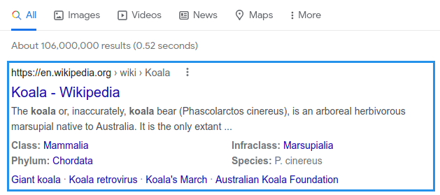

-

First Link Focus
According statistcs over 25% of people click the first Google Search Result. First link focused after search. Just press the Enter to immidiatle open first link after search request.
-

 +
+
Arrow navigation support
Use UP and DOWN or TAB and SHIFT + TAB keys to navigate through results list.